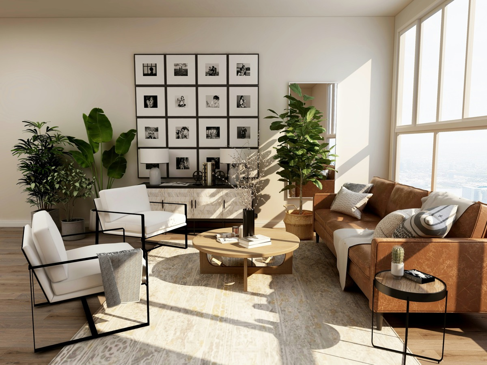
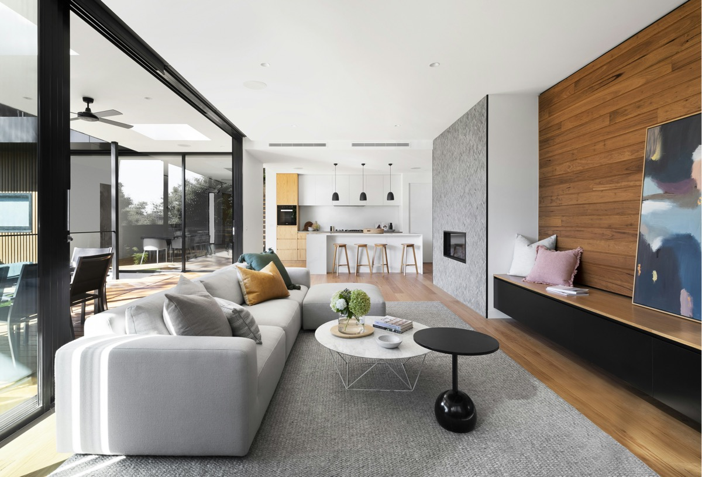

Rooms to live in.
A material-led interior collection exploring daylight, tactile finishes and calm proportions.
Explore rooms ↘
Explore the table lamp
Drag the model to inspect its form, or use the rotation buttons.
Which space are you planning?
The living room
Mark the walking routes first. Place the main seats where conversation feels easy and leave the path between doors clear.
Explore the living room ↗The reading room
Sit in the proposed chair before placing the light. A shade below eye level can illuminate the page while keeping the source out of sight.
Explore the reading room ↗The dining room
Lay out a place setting and pull the chair back as if someone were standing up. That small movement reveals how much space the table really needs.
Explore the dining room ↗
Reading a room before furnishing it
Watch where daylight falls in the morning and again in the evening. An empty corner may need a reading lamp rather than another chair. Start the plan with the way the room is used.
Mark the walking routes first. Place the main seats where conversation feels easy and leave the path between doors clear.
About Calera →Rooms
View all ↗
A study in light
The living room
Mark the walking routes first. Place the main seats where conversation feels easy and leave the path between doors clear.
Explore the living room →The reading room
Sit in the proposed chair before placing the light. A shade below eye level can illuminate the page while keeping the source out of sight.
Explore the reading room →The dining room
Lay out a place setting and pull the chair back as if someone were standing up. That small movement reveals how much space the table really needs.
Explore the dining room →Room brief
Choose a focus and download your notes as a text file.